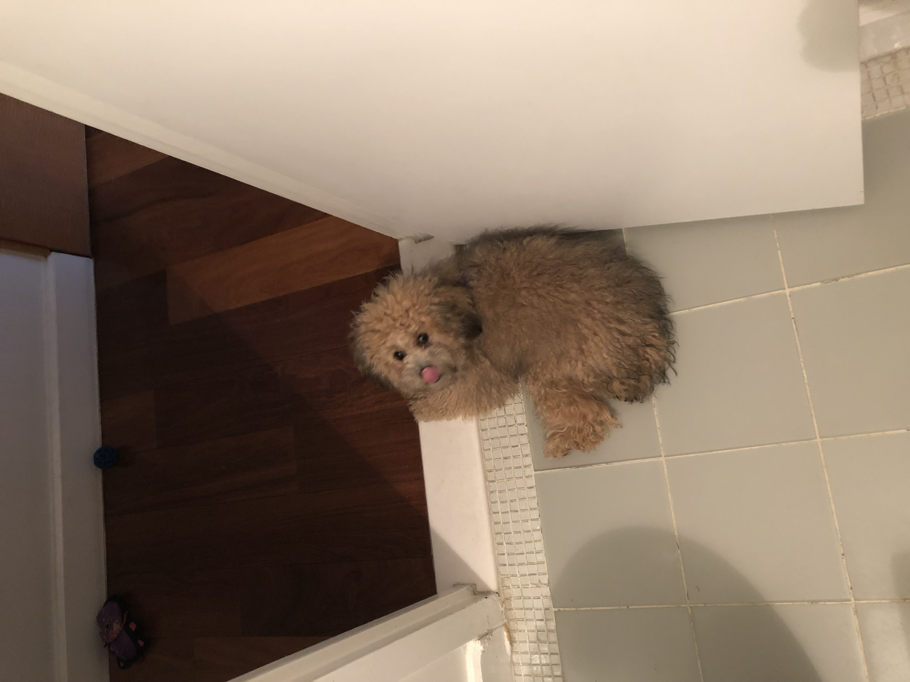

July 14th, 2019:
One of Berry's favourite places to hang out is on the bathroom floor. The cool temperature of the tile helps to keep her comfortable during this heatwave.

11/10 dog
On December 1st, 2018, Berry was born. Since then, she has not only become a crucial member of the Brous-Rothman household, but also definitively the cutest. Being a schnauzer-poodle mix, she is normally very fluffy, and has light brown and blond fur. Recently her fur was shaved for the summer, so she looks much smaller than normal, but she still remains cute. She is also known as the neighborhood dog at her local CVS, which she frequents often. Berry’s favourite employee is Monica.
Likes: Berry enjoys getting her belly scratched, and playing with toys. She is very friendly, and enjoys meeting new people and new dogs.
Dislikes: She doesn’t dislike much, except being accidentally stepped on. (She’s small, so it happens more often than one would think.)
Check out Berry's life! Here are some life updates, with pictures featured below!
July 14th, 2019:
One of Berry's favourite places to hang out is on the bathroom floor. The cool temperature of the tile helps to keep her comfortable during this heatwave.
June 23rd, 2019:
Recently, Berry visited the beach for the first time! She loved digging in the sand, but wasn't as excited about the ocean.
Berry looked extra cute today!